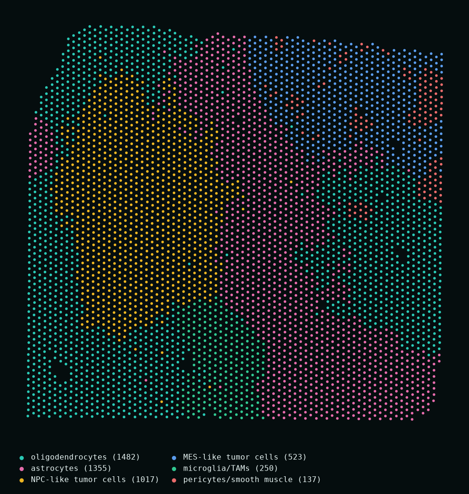

Drop in a dataset.
Get a living atlas.
Artemis Labs turns raw spatial transcriptomics — Visium, Xenium, CODEX — into interactive Vitessce portals with spatially-aware BANKSY clustering, expert cell-state annotation, and an AI copilot that runs entirely on your machine.
$ artemis run --input tumor.h5ad --tissue-context glioblastoma
01 · THE PIPELINE
One command, five stages, zero notebooks.
Load + preprocess
Any .h5ad or 10x Xenium folder. Counts detected, normalized, log1p — spatial coordinates verified.
load_h5ad(input)BANKSY clustering
Each spot is embedded with its neighborhood — clusters follow tissue architecture, not just expression.
λ=0.2 · k=15 · LeidenCell-state annotation
Controlled-vocabulary marker agent — Claude in the cloud, or Qwen3 running fully local.
Neftel GBM statesVitessce portal
Chunk-optimized zarr + an interactive portal: spatial view, UMAP, heatmap, marker search.
portal.html + data.zarrLive analysis + copilot
On-demand differential expression, composition, Moran's I — and a grounded chat on your data.
DE · Moran's I · chat02 · BANKSY
Clustering that sees the tissue.
Standard clustering sees each spot alone — expression without place. The tissue dissolves into noise.
BANKSY embeds every spot with its neighborhood — mean expression and an azimuthal gradient over the k-nearest ring.
Domains emerge that follow the anatomy — tumor states, immune niches, hypoxic zones — ready for annotation.
03 · GLIOBLASTOMA, LIVE
Five tumors, one afternoon.
Five public glioblastoma Visium sections — four from the Ravi et al. 2022 cohort, one from 10x Genomics — dropped into the pipeline unmodified. BANKSY domains, Neftel cell states, and marker maps, each with its own interactive Vitessce portal.

Annotated fully locally — BANKSY (λ=0.2) + Qwen3-8B controlled-vocabulary cell-state calls. Public data: GSE194329 (Ravi et al. 2022), 10x Genomics.
the live portal — three tumors and a local-LLM question, recorded headless in one take
04 · LOCAL COPILOT
An analyst in the rail.
Your data never leaves.
Every portal ships with a research copilot grounded in your dataset — clusters, markers, spatial statistics. It runs on qwen3:8b through Ollama, entirely on local hardware: no API keys, no cloud, no PHI exposure. Prefer frontier reasoning? Flip the model dropdown to Claude.
05 · THE STACK
Eight agents, one CLI.
Spatially-aware clustering — BANKSY λ=0.2, 50 PCs, Leiden over the neighborhood-augmented embedding.
Controlled-vocabulary cell-state calling. Neftel GBM states, tissue-family aware. Claude or local Qwen3.
Any .h5ad or Xenium folder → chunk-optimized zarr + interactive Vitessce portal. One command.
On-demand differential expression, composition shifts, and Moran's I spatial autocorrelation.
Grounded chat on your dataset — viewport-aware, citation-ready, 100% local on qwen3:8b.
PubMed retrieval tuned to your clusters and markers — literature that actually matches the biology.
One-command graphical abstracts straight from pipeline results.
Research-signal mining → verified contact → grounded outreach drafts. How we found you, probably.

the stack, live from the terminal
Your data has a story.
Let's render it.
We came up through research before building Artemis Labs. If your lab is sitting on spatial data and short on computational hands, the first analysis is on us — pick a public or in-house dataset and we'll turn it around as a live portal.
Start a conversation